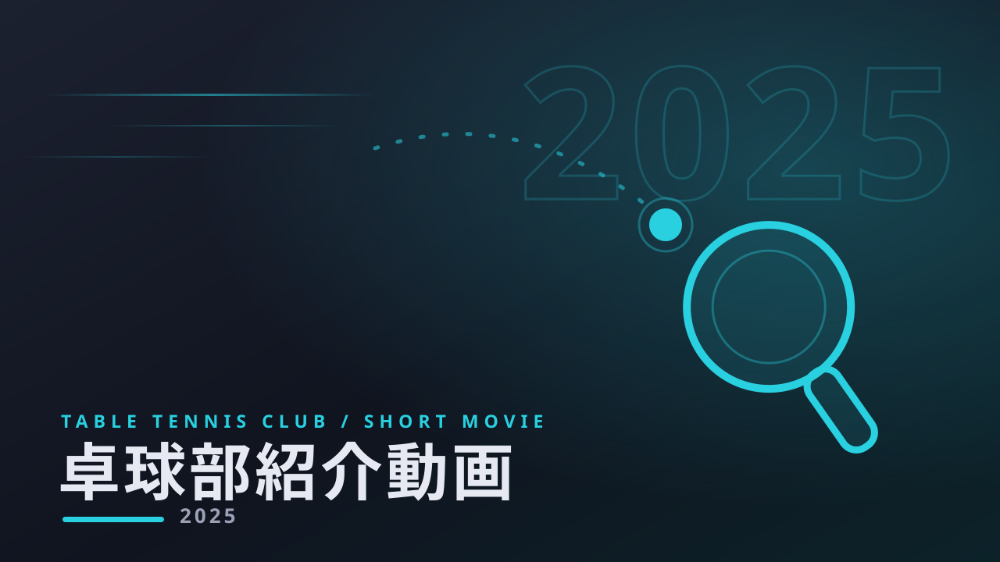
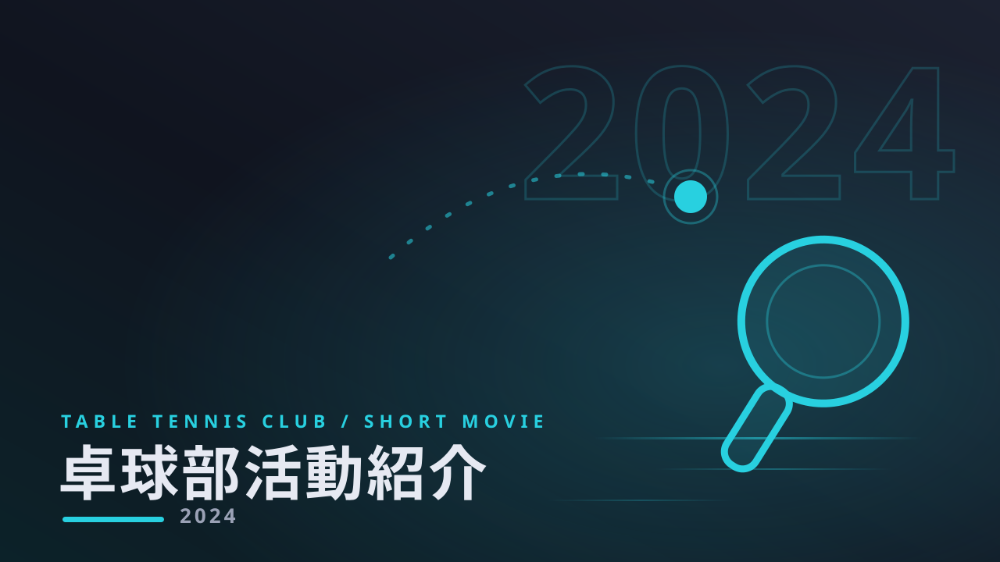

WORKS
 YOUTUBE
▶
YOUTUBE
▶

INSTAGRAM REELS ▶
INSTAGRAM REELS ▶
SERVICES
01
TikTok / Instagram Reels / YouTube Shorts 向けのショート動画編集。
02
採用・集客・リード獲得を目的とした企業向け動画の編集。
03
記事執筆・電子書籍の制作。医療・ヘルスケア分野は特に対応可。
動画編集者の森一真と申します。
医療・ヘルスケア系の知識を活かしたショート動画編集を中心に活動しています。
※上記は目安です。日程により変動しますので、納期・スケジュールはお気軽にご相談ください。
日中は学業があるため返信が遅くなる場合がございますが、必ず24時間以内に返信させていただきます。
すぐに対応できる態勢を整えておりますので、お気軽にご連絡ください。
DATA
年ごとの公開記事数(全11記事)
| 年 | 本数 |
|---|---|
| 2025 | 10本 |
| 2026 | 1本 |
制作の流れ